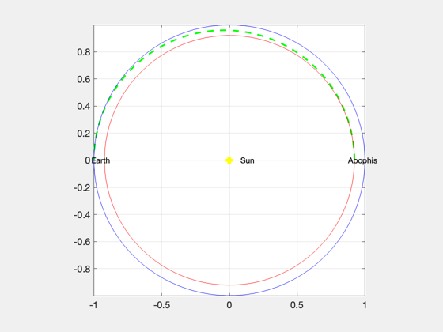
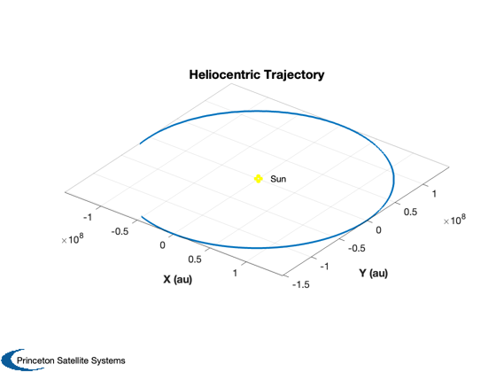
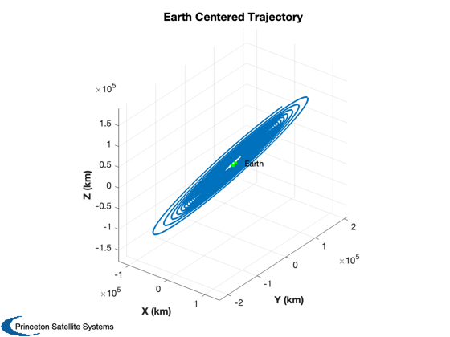
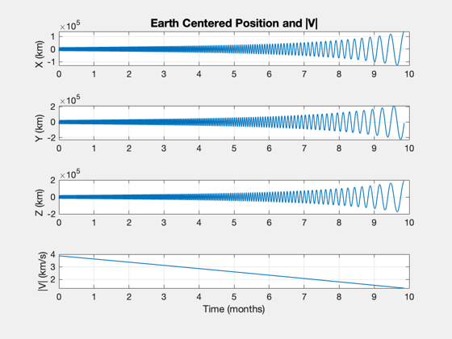

Spiral to a Hohmann Transfer to Apophis.
Computes the Hohmann transfer delta v and the spiral delta v.
The actual delta v for the Hohmann will be higher due to the low thrust. The script simulates the outbound spiral plotting the results in earth fixed and heliocentric coordinates.
The simulation also computes fuel consumption and will turn off the engine when it runs out of fuel.
You start the spacecraft in GPS earth orbit. If there is no thrust, it will oscillate around the earth. The control system applies thrust in the tangential direction.
The time step must be small enough to be at least 10 times smaller than the shortest period in the simulation. If you start orbiting earth with a 90 minute period, the time step should be no longer than 9 minutes. You will get better results with shorter time steps.
Things to explore:
1. With the engine off vary the DT and look at the earth-centered velocity. It should get smoother as DT decreases. 2. Turn the engine on. Change the thrust to see how long it takes for the spacecraft to escape the earth.
Since version 2014.1 ------------------------------------------------------------------------- See also ApophisOrbit, LowThrustEscape, RHSHelioWithPlanets, SolarSysState, HelioFromPlanetInit, CEcl2Eq -------------------------------------------------------------------------
Contents
------------------------------------------------------------------------- Copyright (c) 2014 Princeton Satellite Systems, Inc. All Rights Reserved -------------------------------------------------------------------------
Constants
%----------- aU = Constant('au'); muSun = Constant('mu sun'); muEarth = Constant('mu earth'); secToDay = 1/86400;
Simulation duration
%---------------------
nDays = 300;
tEnd = nDays/secToDay;
dT = 400;
Spacecraft control
%--------------------
engineOn = 1;
Spacecraft parameters
%----------------------- mInitial = 20; % kg mFuel = 5; % kg uE = 2.800*9.806; % km/s Busek Ion engine thrust = 1.9e-3; % N a0 = 26600; % GPS Orbit jD0 = Date2JD([2016 6 1 0 0 0]);
Compute the Hohmann Transfer from Earth to Apophis
%---------------------------------------------------- accel = thrust/mInitial/1000; % km/s^2 dVAvailable = uE*log(mInitial/(mInitial-mFuel)); elA = ApophisOrbit; aA = elA(1); aE = aU; [dV, dV1, dV2, eT, aT] = DVHoh( aE, aA, [], muSun ); dVEscape = LowThrustEscape( 'earth', a0 ); tSpiral = dVEscape/accel;
Plot the results
%------------------ tOF = Period(aT,muSun)/2; t = linspace(0,tOF); el = [aT 0 0 0 eT 0]; rT = RVFromKepler( el, t, muSun )/aU; a = linspace(0,2*pi); cA = cos(a); sA = sin(a); aA = aA/aU; aE = aE/aU; NewFig('Hohmann Transfer') plot(rT(1,:),rT(2,:),'--g','linewidth',2); hold on plot(aE*cA,aE*sA,'b'); plot(aA*cA,aA*sA,'r'); plot(0,0,'oy','linewidth',4) text(0,0,' Sun') text(-1.02*aE,0,'Earth') text( 0.95*aA,0,'Apophis') grid axis image fprintf(1,'Time for first delta V %12.2f days\n',(dV1/accel)*secToDay); fprintf(1,'Time for second delta V %12.2f days\n',(dV2/accel)*secToDay); fprintf(1,'Transfer time %12.2f days\n',tOF*secToDay); fprintf(1,'Total Hohmann delta V %12.2f km/s\n',dV); fprintf(1,'Delta V Earth Escape %12.2f km/s\n',dVEscape); fprintf(1,'Available Delta V %12.2f km/s\n',dVAvailable); fprintf(1,'Initial Earth Orbit %12.2f km\n',a0); fprintf(1,'Spiral time %12.2f days\n',tSpiral*secToDay); drawnow
Time for first delta V 73.95 days Time for second delta V 75.45 days Transfer time 172.11 days Total Hohmann delta V 1.23 km/s Delta V Earth Escape 3.87 km/s Available Delta V 7.90 km/s Initial Earth Orbit 26600.00 km Spiral time 471.62 days
Simulate the outward spiral
%----------------------------- % Number of time steps %--------------------- nSim = floor(tEnd/dT); % Set up the simulation %---------------------- t = (0:(nSim-1))*dT; % Size the plotting array %------------------------ xP = zeros(13,nSim); gP = zeros( 6,nSim); % Start in a GPS Orbit about the earth %------------------------------------- [r, v] = GPSSatellite(jD0); x = [HelioFromPlanetInit( 'earth', [r(:,1); v(:,1)], jD0 );mFuel]; d.p = Planets('rad','earth'); d.muSun = muSun; d.muPlanet = muEarth; d.mDry = mInitial - mFuel; d.uE = uE*1000; d.jD0 = jD0; % Control the engine %------------------- if( ~engineOn ) thrust = 0; end % Simulate the earth escape spiral %--------------------------------- global simulationAction simulationAction = ' '; [ ratioRealTime, tToGoMem ] = TimeGUI( nSim ); nU = floor(nSim/100); for k = 1:nSim if (rem(k,nU) == 0) % Display the status message %--------------------------- [ ratioRealTime, tToGoMem ] = TimeGUI( nSim, k, tToGoMem, ratioRealTime, dT ); % Time control %------------- switch simulationAction case 'pause' pause simulationAction = ' '; case 'stop' return; case 'plot' break; end end % Current Julian date %-------------------- jD = jD0 + t(k)/86400; % Find the thrust vector along the velocity vector relative % to the earth %---------------------------------------------------------- xE = SolarSysState( d.p, jD ); u = Unit(x(4:6) - xE(4:6)); d.thrust = u*thrust; % This is just for plotting purposes %----------------------------------- c = CEcl2Eq( jD ); vEC = c*(x(4:6) - xE(4:6)); rEC = c*(x(1:3) - xE(1:3)); xP(:,k) = [x;rEC;vEC]; % Get a data structure with gravitational accelerations %------------------------------------------------------ [xDot, g] = RHSHelioWithPlanets( x, t(k), d ); gP(:,k) = [g.accelSun;g.accelPlanet]; % Propagate %---------- x = RK4( 'RHSHelioWithPlanets', x, dT, t(k), d ); end TimeGUI('close')
Plot the results
%------------------ t = t(1:k); xP = xP(:,1:k); gP = gP(:,1:k); % Creates convenient units for time labels %----------------------------------------- [t, tL] = TimeLabl( t ); Plot3D(xP(1:3,:),'X (au)','Y (au)', 'Z (au)', 'Heliocentric Trajectory') hold on plot(0,0,'oy','linewidth',4) text(0,0,' Sun') Plot3D(xP(8:10,:),'X (km)','Y (km)', 'Z (km)', 'Earth Centered Trajectory') hold on plot(0,0,'og','linewidth',4) text(0,0,' Earth') Plot2D(t,[xP( 8:10,:);Mag(xP(11:13,:))],tL,{'X (km)' 'Y (km)', 'Z (km)' '|V| (km/s)'}, 'Earth Centered Position and |V|') Plot2D(t,[Mag(gP(1:3,:));Mag(gP(4:6,:))],tL,{'Accel (km/s^2)' }, 'Gravitational Acceleration') legend('Sun','Earth') %-------------------------------------- % PSS internal file version information %-------------------------------------- % $Id: fae89d0e9dca16001194c585d14a1eb1687aa847 $  